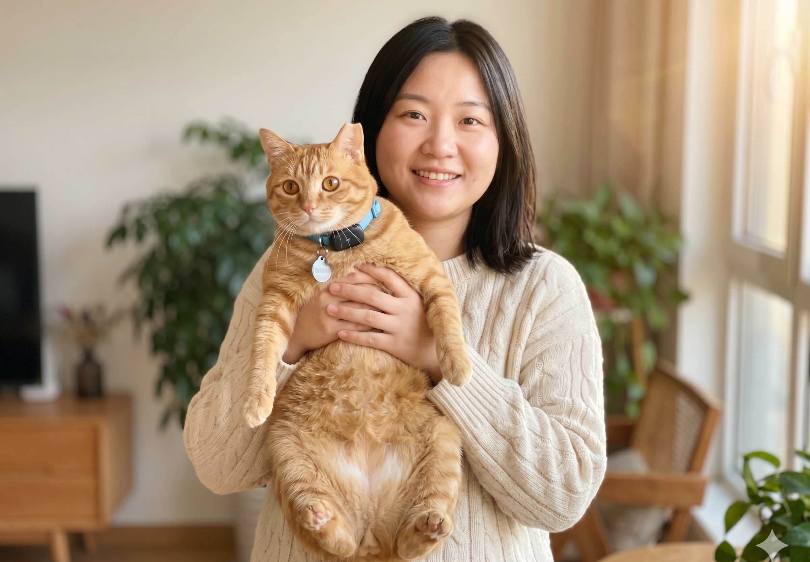

🍊🥹❤️
哈基米回家了
致每一个陪我熬过这三天的人
去 find.cn 搜「哈基米 朝阳 近况」→

写在最后
三天 · 真的太长了。
从 5 月 20 号晚上发现哈基米不见 到今天下午 14:30 在朝阳救助小柚的救助站把她接回家——
每一个小时我都在刷小红书 刷微博 刷互助群 刷监控。
谢谢每一个转发的姐妹 谢谢评论区帮我喊话的姐妹 谢谢老中医叔叔出来劝大家冷静的那几句 真的救了我（差点就要被群里水军挂了）。
哈基米现在睡在我脚边。
身上那圈晒痕还没长回来 但她吃得很好 玩得很好 一切都好。
也谢谢 @朝阳救助小柚 姐妹愿意露脸道歉 这事算是体面收尾 大家都散了吧 不要再去她评论区骂她了 都是爱猫的人 真的真的。
🙏 一一谢过
- @老中医诊脉中 — 群里劝架的叔 谢您
- @鼠鼠不冒泡 — 帮我整理了所有线索
- @嗯哼一下 — 第一个喊"先验芯片"的姐妹
- @朝阳铲屎 — 转了寻猫帖到三个救助群
- @朝阳爱宠宠物医院 — 一直接我电话
- MaoTrack 客服 — 紧急定位帮我锁了位置
- 还有所有匿名转发的小猫咪们🐾
这个城市真的还是温暖的 ❤️
❤️ 12.8w ·
⭐ 5.4w ·
💬 1.2w ·
↗ 转发 8.7w
热门评论 · 共 1.2w 条
😺
@momo
看哭了 这只猫真的可爱
12 分钟前 · ❤ 8.7k
🟧
@momo
姐妹 之前在群里第一个把你抖音号转出去的就是我 真的对不起 找回来真的太好了 当时只看了那一段截图就上头了 我错了 💔
9 分钟前 · ❤ 5.1k
😩
@班味儿过重
是我 当时骂你最凶的那个就是我 看到哈基米平安回家眼泪绷不住 之前那些话我全删了 也跟你道个歉 对不起
8 分钟前 · ❤ 4.6k
🌃
@city不city
挂错人了 抱歉 当时也是看视频上头 现在哈基米回来了 真心祝你们以后顺顺利利 不再说什么了 🙇♀️
6 分钟前 · ❤ 3.8k